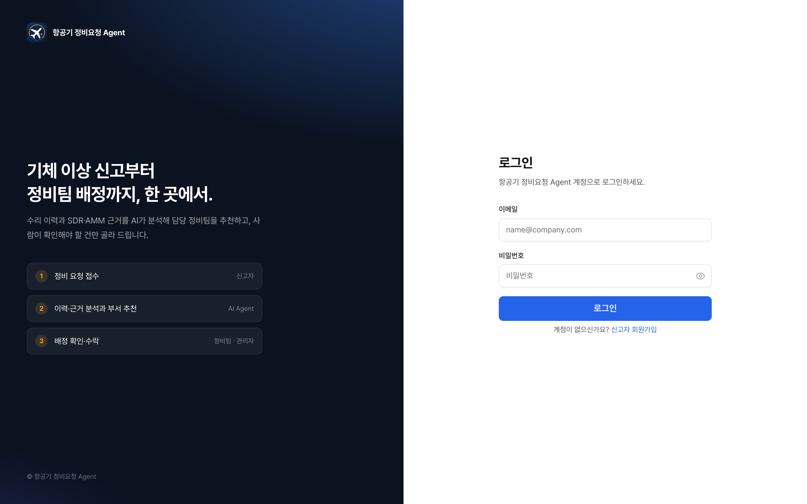


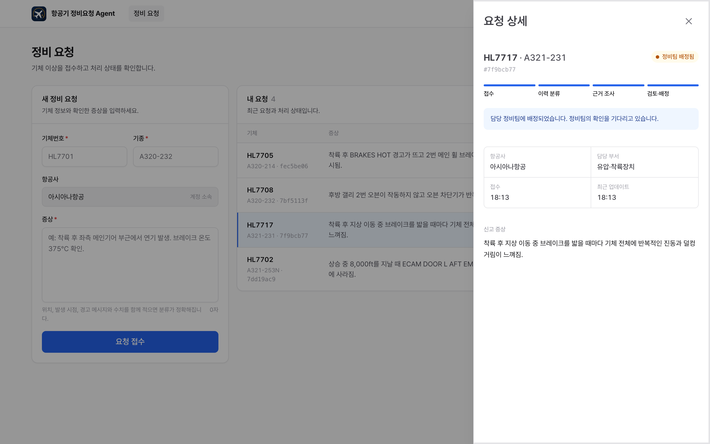
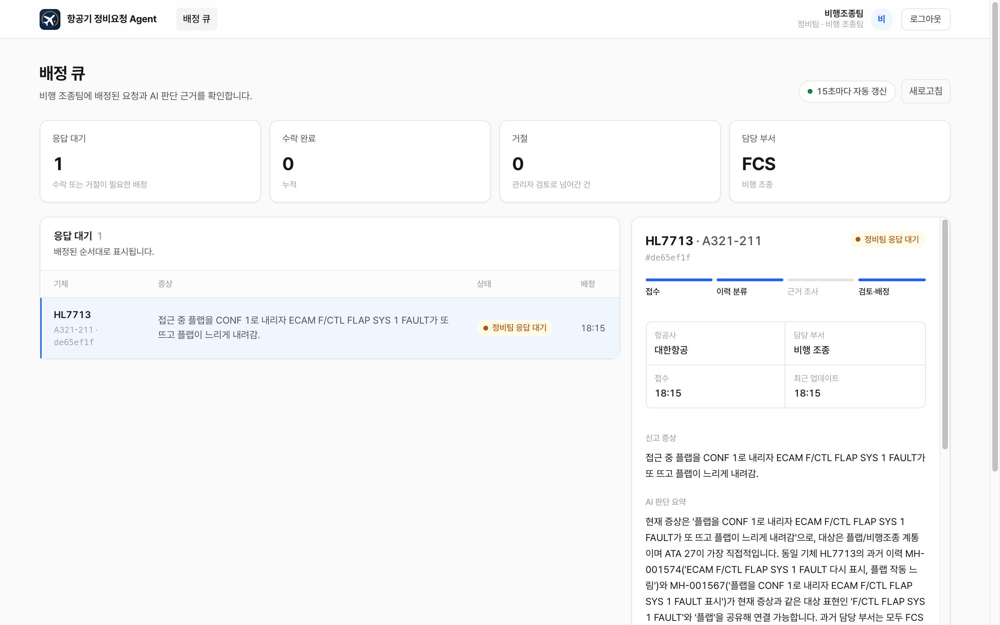
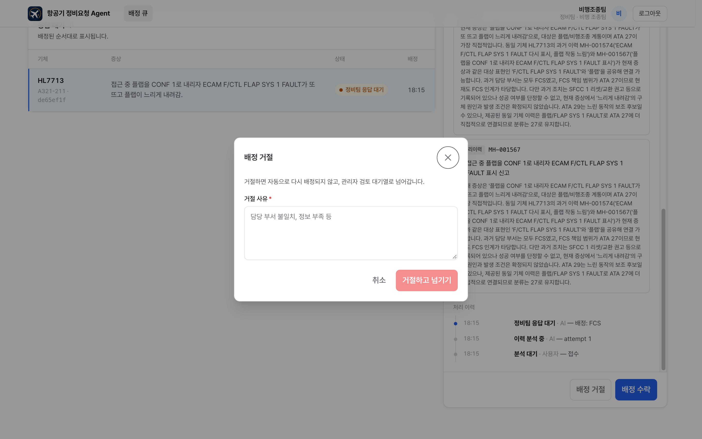
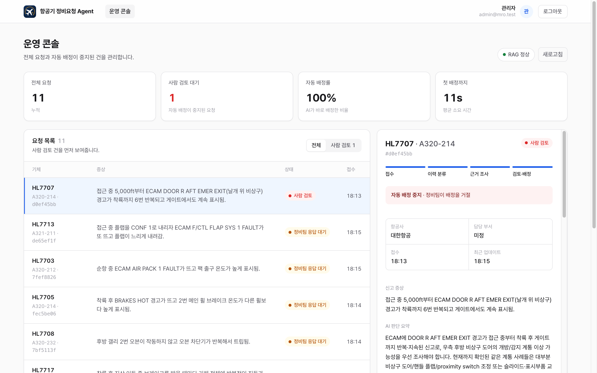
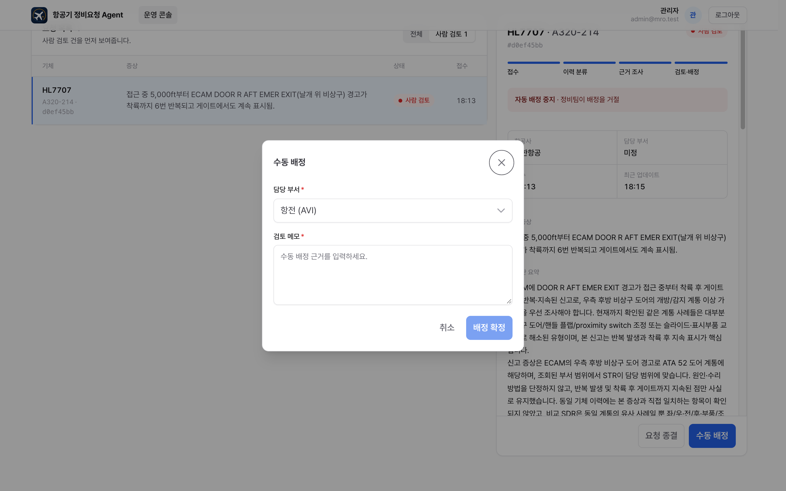
| 소속 | 4기 판교 1반 |
|---|---|
| 팀 | 항공기 정비요청 Agent 팀 |
| 팀원 | 유영호 · 최세환 · 김유빈 · 곽나현 · 이주영 · 김경 |
| 작성일 | 2026-10-21 |
항공사 정비통제실에는 운항 중이나 지상에서 발견한 결함 신고가 계속 들어온다. 신고는 "상승 중 객실에서 퀴퀴한 냄새가 남"처럼 자연어로 들어오고, 어느 정비 부서가 맡을지는 통제 담당자가 경험으로 판단한다.
신고가 들어오면 같은 기체의 수리이력과 유사 결함 사례(SDR)를 근거로 담당 부서를 정하고, 근거와 함께 배정한다. 근거가 부족하거나 판단이 엇갈리면 자동 배정을 멈추고 사람 검토로 넘긴다.
| 구분 | 내용 |
|---|---|
| 대상 기종 | Airbus A320 계열 (목업 기체 20대, 항공사 3곳: KAL·AAR·JNA) |
| 배정 단위 | 정비 부서 8개: AVI 항전, ELE 전기, ENG 엔진, HYD 유압·착륙장치, SYS 기계 계통, STR 구조, CAB 객실, FCS 비행 조종 |
| 범위 안 | 신고자 회원가입·로그인, 신고 접수와 보완 안내, 초기 분류, 근거 조사, 검토·배정, 정비팀 수락·거절, 사람 검토, 역할별 대시보드 |
| 범위 밖 | 실제 정비 절차 지시, 운항 가능 여부 판단, 정비팀 거절 후 자동 재배정 |
대상은 항공사 정비본부와 MRO(정비 위탁) 업체의 정비통제 조직이다(B2B).
| 가치 | 내용 |
|---|---|
| 배정 시간 단축 | 반복 결함은 접수 단계에서 같은 기체 이력과 바로 연결해 조사 없이 배정한다. |
| 근거가 남는 배정 | 배정마다 수리이력 ID와 SDR·AMM 근거 ID, 원문 일부가 저장돼 사후 검토와 감사에 쓸 수 있다. |
| 책임 범위 구분 | 근거가 맞지 않거나 판단이 엇갈리는 건은 이유와 함께 사람에게 넘겨 자동화 범위를 통제한다. |
| 확장성 | 부서·ATA 매핑과 RAG 데이터는 버전 단위로 바꿀 수 있어 다른 기종·조직에도 같은 구조를 쓸 수 있다. |
실제 실행 근거 수치 (실제 모델 gpt-5.4-mini + MCP + RabbitMQ 종단 간, AI 경로 시나리오 23건, 5.3)
반복 결함은 평균 6.3초에 근거 이력과 함께 배정됐고, 이력이 없는 신규 증상도 SDR 사례를 찾아 16.9초 안팎에 배정됐다. 사람이 이력을 찾고 부서를 판단하는 시간을 수 초로 줄이면서 배정마다 근거 ID와 원문이 남는다.
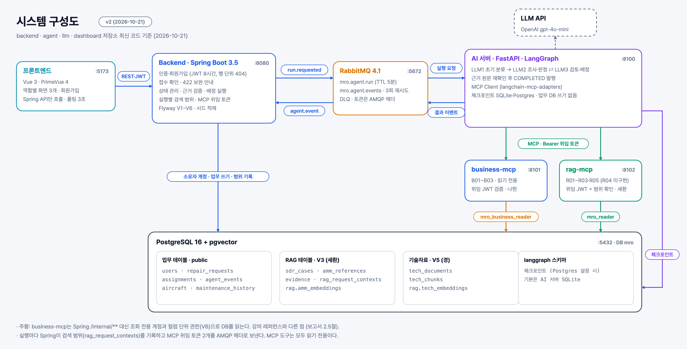
| 구성 요소 | 포트 | 기술 | 역할 |
|---|---|---|---|
| 프론트엔드 | 5173 | Vue 3.5, TypeScript, Vite 7, PrimeVue 4 | 신고자·정비팀·어드민 화면과 회원가입. Spring API만 호출 |
| Backend | 8080 | Spring Boot 3.5, Java 21, Flyway | 인증·권한, 접수 확인, 상태 관리, 근거 검증과 배정 실행, 실행별 검색 범위와 MCP 위임 토큰 발급 |
| RabbitMQ | 5672 | RabbitMQ 4.1 | 실행 요청·결과 이벤트 전달, 실패 메시지 DLQ |
| AI 서버 | 8100 | Python 3.12, FastAPI, LangGraph | 큐에서 실행 요청을 받아 LLM1~3 실행, MCP 도구 호출, 결과 이벤트 발행 |
| business-mcp | 8101 | FastMCP | 접수 내용, 기체 수리이력, 부서 후보 조회 (B01~B03) |
| rag-mcp | 8102 | FastMCP, pgvector, CPU 전용 PyTorch | JASC·SDR·AMM 검색과 근거 원문 확인 (R01~R03, R05) |
| PostgreSQL | 5432 | PostgreSQL 16 + pgvector 0.8.2 | 업무 데이터, RAG 데이터와 임베딩, 실행별 검색 범위 |
| LLM | - | OpenAI gpt-5.4-mini | 분류·조사·검토 판단과 다음 도구 선택 |
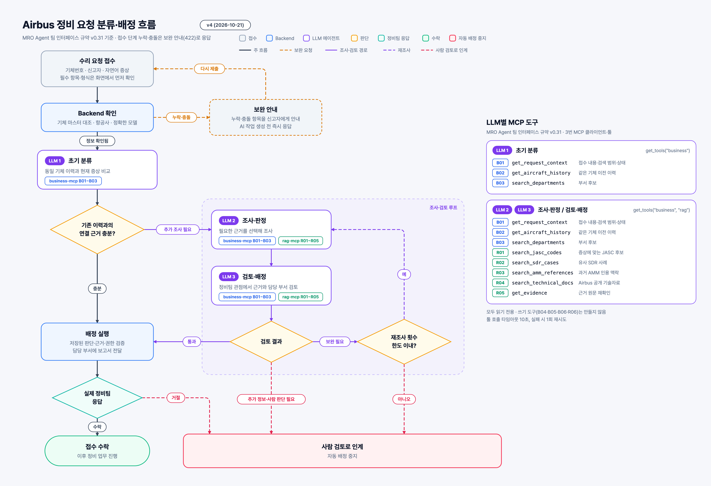
| 상태 | 의미 | 다음 상태 |
|---|---|---|
QUEUED | 접수 확인 통과, 실행 요청 발행 | 진행 중 상태끼리(QUEUED 제외), ASSIGNED, HUMAN_REVIEW |
CLASSIFYING | LLM1 초기 분류 중 | |
INVESTIGATING | LLM2 조사 중 | |
REVIEWING | LLM3 검토 중 | |
ASSIGNED | 부서 배정, 정비팀 응답 대기 | ACCEPTED, HUMAN_REVIEW |
HUMAN_REVIEW | 사람 검토 대기, 자동 배정 중지 | ASSIGNED, CLOSED |
ACCEPTED · CLOSED | 정비팀 수락 · 어드민 종결 | 종료 |
상태는 Spring의 RequestWorkflow로만 바뀌고, 허용되지 않은 전이는 409(INVALID_STATE)로 막는다. 사람 검토 사유: AGENT_NEEDS_HUMAN, RETRY_LIMIT, TEAM_REJECTED, VALIDATION_FAILED, SYSTEM_ERROR.
요청 하나를 처리하는 동안 노드들이 함께 쓰는 상태(GraphState)를 두고, 노드는 상태를 읽어 바뀐 필드만 돌려준다. 모든 출력 모델은 정의되지 않은 필드와 빈 문자열을 거부하고, 형식 오류가 나면 오류 내용을 알려 1회 다시 받는다.
| 필드 | 타입 | 채우는 곳과 의미 |
|---|---|---|
request_id 외 4개 | str | 실행 요청 메시지. 요청 ID, 등록부호, 정확한 모델, 항공사, 증상 |
classification | Classification | None | LLM1. ATA 2자리, 연결한 수리이력 ID, 충분 여부, 제안 부서(충분일 때 필수), 이유 |
investigations | list[Investigation] | LLM2. 재조사마다 쌓임. ATA, 추정 결함, 심각도(LOW·MEDIUM·HIGH·AOG), 근거(1개 이상), 제안 부서 |
reviews | list[Review] | LLM3. 결정(PASS·SUPPLEMENT·HUMAN), 부서(PASS일 때 필수), 의견, 보완 요청(SUPPLEMENT일 때 필수) |
retry_count | int | 라우팅. SUPPLEMENT로 LLM2에 되돌아간 횟수 |
근거(Evidence)는 출처(HISTORY·SDR·AMM), 근거 ID, 원문 일부(300자 이내), 사용 이유로 구성한다.
| 분기 조건 | 다음 |
|---|---|
classification.sufficient == True | 바로 배정 결과 |
classification.sufficient == False | LLM2 조사·판정 → LLM3 검토 |
review.decision == "PASS" | 근거 재확인 → 배정 결과 |
"SUPPLEMENT", retry_count < 2 | LLM2 재조사 (직전 보완 요청을 입력에 포함) |
"SUPPLEMENT", retry_count >= 2 | 사람 검토 (RETRY_LIMIT) |
"HUMAN" 또는 노드 보류 | 사람 검토 (AGENT_NEEDS_HUMAN 등) |
Agentic 요소는 네 가지다. LLM2·LLM3가 매 단계 다음 행동(도구 호출·마무리·보류)과 도구를 스스로 고른다. LLM3가 LLM2 결과를 검토해 부족하면 무엇을 더 볼지 지정해 되돌린다. 판정에는 도구 결과에 실제로 있던 근거만 쓴다. 근거가 맞지 않거나 한도를 넘으면 이유 코드와 함께 스스로 멈추고 사람에게 넘긴다.
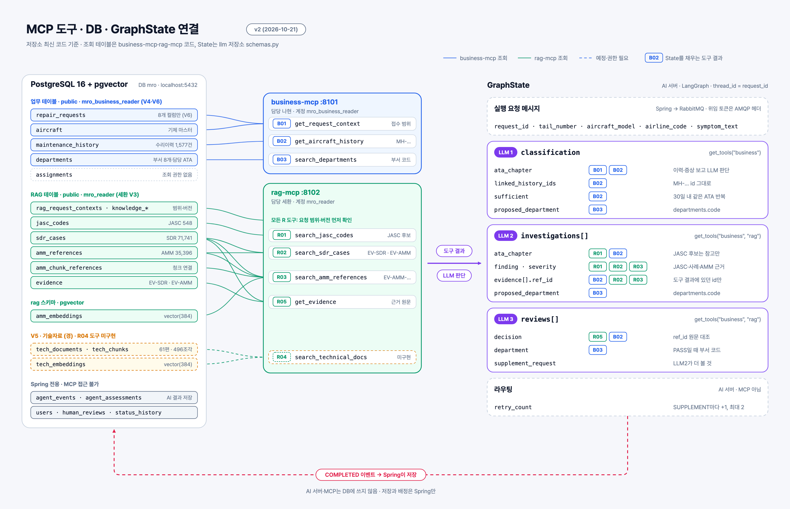
| 영역 | 선택 | 근거 |
|---|---|---|
| Backend | Spring Boot 3.5, Spring Security(JWT), JPA, Flyway | 권한, 상태 전이, 배정 같은 업무 규칙을 한 곳에 모은다. 스키마는 Flyway 이력(V1~V6)으로만 바꾼다. |
| AI 서버 | FastAPI, LangGraph, LangChain MCP 어댑터 | 분기와 반복이 있는 흐름을 그래프로 표현하고, 요청 단위로 상태를 체크포인트에 저장한다. |
| 서버 간 통신 | RabbitMQ 4.1 + DLQ | LLM 처리는 수 초~수십 초가 걸려 HTTP 동기 호출 대신 큐로 분리했다. |
| MCP | FastMCP 서버 2개, streamable HTTP | 업무 조회와 근거 검색을 표준 도구로 노출하고, 인증·응답 형식·읽기 전용 DB를 공통 기반으로 쓴다. |
| DB | PostgreSQL 16 + pgvector | 업무 데이터와 벡터 검색을 DB 하나에서 스키마와 조회 계정으로 나눠 운영한다. |
| 임베딩 | multilingual-e5-small (384차원) | 한국어 신고문과 영어 SDR을 같은 공간에서 비교한다. 로컬 CPU 실행이라 외부 호출 비용이 없다(rag-mcp 이미지 2GB). |
| LLM | OpenAI gpt-5.4-mini | 처음에는 비용이 낮은 gpt-4o-mini로 시작했으나, 실제 실행에서 무관한 이력 연결·조기 종료가 잦아 같은 소형 계열의 상위 모델로 바꿨다. AI 서버가 허용 목록(gpt-4o-mini·gpt-4.1-mini·gpt-5.4-mini)으로 교체를 지원한다. |
| 품질 특성 | 설계 대응 |
|---|---|
| 기능 적합성 | 상태 전이 규칙을 Spring 한 곳에서 검증. 배정 직전에 부서 활성 여부와 근거 ID를 다시 확인 |
| 성능 효율성 | 접수는 202로 바로 응답하고 AI 처리는 큐로 비동기 실행. MCP 문장 8초, AI 측 도구 10초·모델 45초 제한. 실측 평균 14.6초 |
| 호환성 | MCP 표준 도구와 공통 응답 형식. 서버 간 메시지는 JSON(snake_case), 시간은 UTC |
| 사용성 | 필드 단위 보완 안내(422)와 등록 정보 한 번에 적용, 진행 상태 폴링(3초), 단계별 판단과 근거 화면 |
| 신뢰성 | 결과 이벤트 확인 후 ack, 실패 시 재전달, 처리 불가 메시지는 DLQ, 5분 시간 초과는 사람 검토, event_id로 중복 제거 |
| 보안 | JWT와 행 단위 권한(남의 요청은 404). MCP는 실행별 위임 토큰으로만 호출, 서버별 조회 전용 계정과 컬럼 단위 권한, 쓰기 도구 없음 |
| 유지보수성 | 인터페이스 규약으로 모듈 경계 고정, Flyway 스키마 이력, RAG 데이터는 버전 덤프로 교체 |
| 이식성 | docker compose로 DB·큐·Backend·데이터 복원을 함께 실행. MCP·AI 서버도 각자 Dockerfile과 compose 제공 |
강의 레퍼런스 아키텍처는 business-mcp가 Spring 내부 API(/internal/**)를 거치도록 정한다. 우리 구현은 business-mcp가 조회 전용 계정(mro_business_reader)으로 DB를 직접 읽고, Spring에는 /internal/** 경로가 없다. 업무 규칙이 MCP로 새지 않도록 다음 장치를 두었다.
repair_requests는 8개 컬럼만 연다(V6). 신고자 ID는 열지 않는다.| 팀원 | 담당 | 주요 구현 결과 | 저장소 |
|---|---|---|---|
| 유영호 | Backend, 통합, 권한 관리 | 인증·회원가입, 접수 확인(422), 상태 머신, RabbitMQ·DLQ, 근거 검증과 배정 실행, 실행별 검색 범위와 MCP 위임 토큰, Flyway V1~V6, 데이터 복원 스크립트, 대시보드 백엔드 연동, CI, 전체 종단 간 통합 | backend, dashboard |
| 최세환 | SDR·AMM DB, rag-mcp, AI 실행기 | SDR·AMM·JASC 정제와 적재, e5 임베딩과 벡터 검색, rag-mcp(R01~R03, R05), RAG 데이터 덤프 전달, LLM1과 FastAPI·RabbitMQ 실행기, LLM2·LLM3 통합 | agent, llm |
| 김유빈 | LLM2·LLM3 | 조사·판정(LLM2)과 검토·배정(LLM3) 노드, 도구 선택 반복, 근거 검증, MCP 계약 맞춤 | llm |
| 곽나현 | MCP 도구와 클라이언트 연결 | FastMCP 공통 기반(인증·응답 형식·읽기 전용 DB), business-mcp(B01~B03), rag-mcp 공통 기반 전환 | agent |
| 이주영 | 대시보드, 사용자 데이터 | 신고자·정비팀·어드민 대시보드 화면 구성, 사용자 시드 데이터 | dashboard |
| 김경 | 목업 데이터, 기술자료 | 수리이력 목업과 테스트 시나리오 29건, Safety First 기술자료 61편 정제·임베딩과 V5 테이블, 흐름도·구성도 | backend(seed, V5) |
통합 단계(10/21)에서 추가·수정한 사항
| 저장소 | 변경 |
|---|---|
| backend | 신고자 회원가입·항공사 목록 API, FCS(ATA 27) 부서·계정·수리이력 78건·시나리오 S23, 기술자료 부서 매핑 재계산, Flyway V6, 실행별 검색 범위와 MCP 토큰 발급, VALIDATION_FAILED 사유 보존 |
| dashboard | 목업 제거와 실제 API 연결, 로그인·회원가입 화면, 전체 화면 디자인 개편(항공기 정비요청 Agent 로고) |
| agent | business-mcp 토큰 검증, 기종 기준 검색 범위, 넓은 검색의 단어 순위 검색, 도구 설명 보강, CPU 전용 PyTorch(이미지 19.3GB → 2GB) |
| llm | LLM1 2단계 분류와 연결 이력 검증, LLM2 근거 확보 장치, 모델 입력 축약, 형식 오류 재시도, gpt-5.4-mini 지원, Dockerfile 기본 이미지 수정 |
| 화면 | 주요 기능 |
|---|---|
| 로그인·회원가입 | 신고자는 이름, 이메일, 소속 항공사, 비밀번호로 가입하고 바로 로그인. 역할에 따라 각자의 화면으로 이동 |
| 신고자 | 수리 요청 작성(등록부호·모델·항공사·증상), 422 보완 안내와 등록 정보 적용, 내 요청 목록과 검색, 진행 단계 표시(처리 중이면 3초마다 갱신) |
| 정비팀 | 내 부서 배정 대기함(15초마다 갱신), 대기·수락·거절 건수, 수락, 사유를 적는 거절, AI 판단 근거 보기 |
| 어드민(통제사) | 전체 요청과 사람 검토 우선 정렬, 통계(전체, 사람 검토, 자동 배정률, 첫 배정까지 평균 시간), RAG 데이터 상태, 수동 배정·종결 |
| 판단 근거 | 단계별 AI 판단, ATA, 제안 부서, 재조사 횟수, 근거 목록(HISTORY·SDR·AMM), 상태 이력. 수동 배정이 AI 제안과 다르면 표시 |






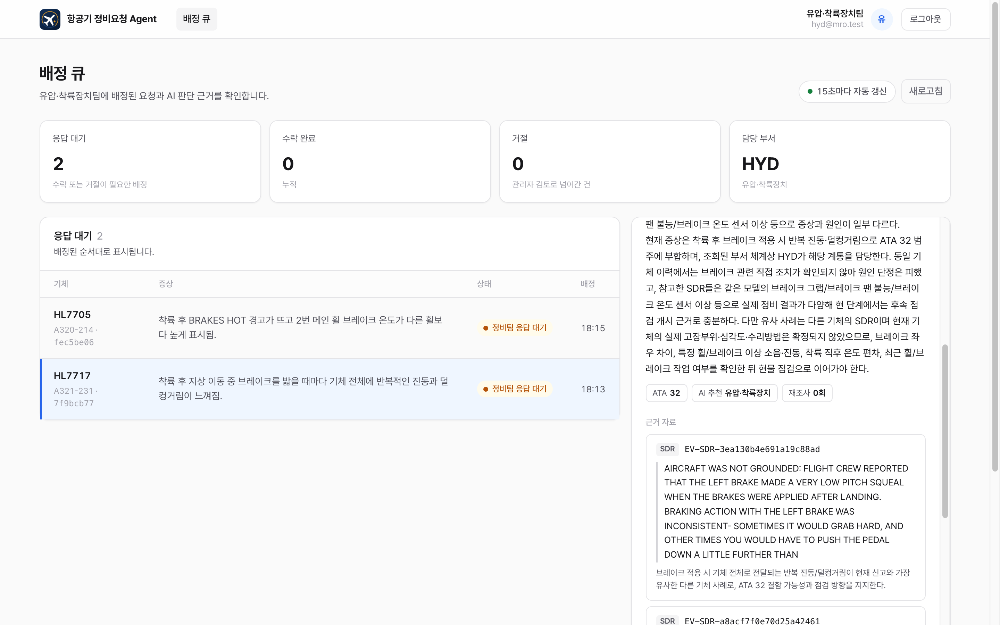
| 데이터 | 규모 | 출처와 특징 |
|---|---|---|
| 기체·항공사 | 20대, 3곳 | 목업. A320 계열 정확한 모델 10종(모두 SDR에 있는 모델) |
| 수리이력 | 1,577건 | 목업. FAA SDR 실제 결함을 한국어로 다시 쓰고 JASC 코드를 붙임. 비행 조종(FCS) 78건 포함 |
| 부서 | 8개 | 부서별 담당 ATA 장 매핑 |
| 계정 | 15개 + 가입 | 시드: 어드민 1, 신고자 6, 정비팀 8(부서별 1). 신고자는 회원가입 가능 |
| SDR 사례 | 71,741건 | FAA Service Difficulty Reports. 원본 76개 필드 보존, 평가용 일부는 검색 제외 |
| AMM 인용 | 35,396건 | SDR 서술에서 추출한 AMM 참조 번호와 인용 맥락 (매뉴얼 본문 아님) |
| JASC·청크·근거 | 548 / 31,678 / 107,137 | 결함 분류 코드, AMM 청크 임베딩(384차원), 근거 ID |
| 기술자료 | 61편, 496조각 | Airbus Safety First 아카이브(2005~2013). 테이블과 데이터, 부서 매핑은 준비, 검색 도구는 미구현 |
RAG 데이터는 공유 DB에 직접 넣지 않고, 데이터만 담은 덤프를 Backend 복원 스크립트가 넣는다. 테이블이 비어 있을 때만 복원하고 건수·해시를 확인한다.
| 위치 (llm 저장소) | 내용 |
|---|---|
agent/full_workflow.py | LLM1→2→3 전체 그래프와 분기 함수. 재조사 한도 2, 재귀 한도 80 |
agent/nodes/ | classify.py(LLM1), investigate.py(LLM2), review.py(LLM3), common.py(준비 단계와 근거 선택 반복, 모델 입력 축약) |
agent/tools.py | 도구 호출 관문: 허용 목록, 입력 검증, 노드당 호출 8회 한도, 근거 원문 대조 |
server/ | RabbitMQ 실행기, 이벤트 저널(SQLite), 위임 토큰 처리 |
/requests/{id}/trace)으로 보여준다.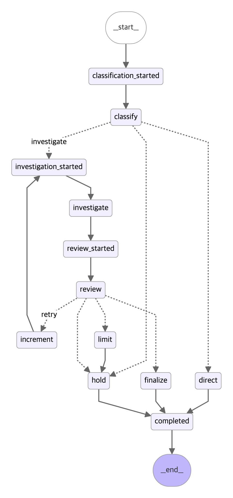
build_full_graph().get_graph().draw_mermaid()로 출력)입력: HL7717 / A321-231 / AAR, "착륙 후 지상 이동 중 브레이크를 밟을 때마다 기체 전체에 반복적인 진동과 덜컹거림이 느껴짐." (실제 gpt-5.4-mini, business-mcp·rag-mcp, 위임 토큰 사용)
| 순서 | 단계 | 종류 | 도구 / 이벤트 | 입력 요약 | 결과 |
|---|---|---|---|---|---|
| 1 | LLM1 분류 | 이벤트 | STAGE_STARTED | - | - |
| 2 | LLM1 분류 | MCP 호출 | get_request_context | {} | OK |
| 3 | LLM1 분류 | MCP 호출 | search_departments | {"limit": 20} | OK |
| 4 | LLM1 분류 | MCP 호출 | get_aircraft_history | {"limit": 100} | OK, 83건 (MH-001497, MH-001485, MH-001436) |
| 5 | LLM1 분류 | 이벤트 | STAGE_RESULT | - | ATA 32, 연결 이력 0건, sufficient=False → 조사로 |
| 6 | LLM2 조사 | 이벤트 | STAGE_STARTED | - | - |
| 7 | LLM2 조사 | MCP 호출 | get_request_context | {} | OK |
| 8 | LLM2 조사 | MCP 호출 | search_departments | {"query": "착륙 후 지상 이동 중 브레이크를 밟을 때마다 기체 전체에 반복… | OK |
| 9 | LLM2 조사 | AI 판단 | NextStep: FINISH | 현재 신고 증상은 ATA 32(착륙장치/브레이크) 계통으로 볼 수 있는가, 그리고 … | 조사 종료 요청 → 근거 없음으로 반려(FINISH_WITHOUT_EVIDENCE) |
| 10 | LLM2 조사 | AI 판단 | NextStep: CALL → search_sdr_cases | 브레이크 사용 시 지상 활주 중 반복 진동/덜컹거림과 가장 유사한 SDR 사례가 있… | 도구 선택 |
| 11 | LLM2 조사 | MCP 호출 | search_sdr_cases | {"query": "brake vibration taxi", "search_mode… | OK, 5건 (EV-SDR-ecdb00b3c949d4bc6ccd, EV-SDR-44c7c329863866bf6fa1, EV-SDR-dcf9ab1ad7ab73b11c9c) |
| 12 | LLM2 조사 | AI 판단 | NextStep: FINISH | 현재 증상은 ATA 32(유압·착륙장치)로 충분히 분류 가능한가, 그리고 브레이크 … | 조사 종료 요청 |
| 13 | LLM2 조사 | 이벤트 | STAGE_RESULT | - | ATA 32, 심각도 MEDIUM, 제안 HYD, 근거 EV-SDR-3ea130b4e691a19c88ad, EV-SDR-a8acf7f0e70d25a42461 |
| 14 | LLM3 검토 | 이벤트 | STAGE_STARTED | - | - |
| 15 | LLM3 검토 | MCP 호출 | get_request_context | {} | OK |
| 16 | LLM3 검토 | MCP 호출 | search_departments | {"query": "착륙 후 지상 이동 중 브레이크를 밟을 때마다 기체 전체에 반복… | OK |
| 17 | LLM3 검토 | AI 판단 | NextStep: FINISH | 브레이크 적용 시 택싱 중 반복 진동·덜컹거림 증상이 HYD(ATA 32/29) 후… | 조사 종료 요청 |
| 18 | LLM3 검토 | 이벤트 | STAGE_RESULT | - | PASS → HYD |
| 19 | 최종 재검증 | MCP 호출 | get_request_context | {} | OK |
| 20 | 최종 재검증 | MCP 호출 | search_departments | {"query": "착륙 후 지상 이동 중 브레이크를 밟을 때마다 기체 전체에 반복… | OK |
| 21 | 최종 재검증 | MCP 호출 | get_evidence | {"evidence_id": "EV-SDR-3ea130b4e691a19c88ad"} | OK, 1건 (EV-SDR-3ea130b4e691a19c88ad) |
| 22 | 최종 재검증 | MCP 호출 | get_evidence | {"evidence_id": "EV-SDR-a8acf7f0e70d25a42461"} | OK, 1건 (EV-SDR-a8acf7f0e70d25a42461) |
| 23 | 완료 | 이벤트 | COMPLETED | - | ASSIGN → HYD |
LLM1은 같은 기체 이력 83건 가운데 브레이크(ATA 32) 이력이 없어 연결하지 않았다. LLM2는 처음 근거 없이 마무리하려다 반려된 뒤 search_sdr_cases를 영어 핵심어 brake vibration taxi로 호출해 SDR 5건을 찾았고, 그중 2건으로 조사안을 썼다. LLM3가 PASS한 뒤 최종 재검증에서 get_evidence(R05)로 두 근거의 원문을 다시 확인하고 HYD 배정 이벤트를 보냈다.
{
"investigation": {
"ata_chapter": "32",
"finding": "착륙 후 지상 이동 중 브레이크 적용 시 기체 전체에 반복적인 진동·덜컹거림이 느껴진 신고로, 현재는 착륙장치/브레이크 계통(ATA 32) 이상 여부를 우선 조사해야 합니다. 동일 기체의 연결된 과거 이력은 없었고, 유사 사례에서는 브레이크 자체의 작동 이상 또는 브레이크 팬/휠 손상이 실제 원인으로 확인된 경우가 있어 해당 계통 점검이 필요합니다.",
"severity": "MEDIUM",
"proposed_department": "HYD",
"evidence": [
{
"source": "SDR",
"ref_id": "EV-SDR-3ea130b4e691a19c88ad",
"excerpt": "AIRCRAFT WAS NOT GROUNDED: FLIGHT CREW REPORTED THAT THE LEFT BRAKE MADE A VERY LOW PITCH SQUEAL WHEN THE BRAKES WERE AP…"
},
{
"source": "SDR",
"ref_id": "EV-SDR-a8acf7f0e70d25a42461",
"excerpt": "AIRCRAFT WAS GROUNDED: AFTER LANDING, WHILE TAXIING, NOTICEABLE REPEATED VIBRATION AND THUMPING WAS FELT THROUGH THE AIR…"
}
]
},
"review": {
"decision": "PASS",
"department": "HYD"
},
"completed": {
"outcome": "ASSIGN",
"department": "HYD"
}
}
| ID | 도구 | 입력과 동작 | 상태 |
|---|---|---|---|
| B01 | get_request_context | 접수 내용·기체·현재 상태와 검색 범위(model_key). 기체 마스터와 다르면 NEEDS_INPUT | 구현 |
| B02 | get_aircraft_history | 같은 기체 수리이력(MH-*)을 최신순, 신고 시점 이전만. 최대 100건, 커서 | 구현 |
| B03 | search_departments | 후보 JASC의 ATA와 질의 속 부서명으로 부서 후보 순위 | 구현 |
| R01 | search_jasc_codes | 질의 또는 코드로 JASC 후보 검색 (영어 단어, 하나라도 맞으면 순위) | 구현 |
| R02 | search_sdr_cases | 같은 모델의 유사 SDR 사례 검색. explore는 단어 순위, exact는 구절 | 구현 |
| R03 | search_amm_references | 벡터(코사인) 검색 또는 AMM 번호 정확 조회 | 구현 |
| R04 | search_technical_docs | Airbus 기술자료 검색 (데이터·테이블·부서 매핑만 준비) | 미구현 |
| R05 | get_evidence | EV-SDR-*, EV-AMM-* 근거 원문 재확인 | 구현 |
business-mcp(8101)와 rag-mcp(8102)는 공통 기반(src/mro_mcp/common)을 같이 쓴다: 위임 토큰 검증 미들웨어, 읽기 전용 DB 연결, 공통 응답 형식(status, request_id, context_version, trace_id, counts, next_cursor, warnings, error, items), 오류 코드, 상태 확인(/health, /health/ready, /health/live). 모든 도구는 읽기 전용이다. AI 서버의 MCP 클라이언트 하나가 두 서버에 연결하고, LLM1은 business 도구만, LLM2·LLM3는 두 서버 도구를 모두 받는다.
| 서버 | 조회 테이블 | DB 계정 | 나눈 이유 |
|---|---|---|---|
| business-mcp | repair_requests(8개 컬럼), aircraft, maintenance_history, departments | mro_business_reader | 업무 규칙과 권한이 걸린 데이터, 실시간으로 바뀜, 키 값으로 정확히 조회 |
| rag-mcp | jasc_codes, sdr_cases, amm_references, evidence, rag.amm_embeddings 등 | mro_reader | 외부 참고 자료, 버전 단위로 교체, 전문검색과 벡터 검색, 임베딩 모델이 필요해 무거움 |
rag_request_contexts에 검색 범위를 기록한다: 요청 ID, 버전, 신고자·항공사, 모델 키(하이픈 제거), 준비된 데이터 버전과 색인, 만료 1시간.mro-backend, 대상 mro-business·mro-rag, 유효 10분)를 AMQP 헤더(x-mro-business-token, x-mro-rag-token)로 보낸다.SDR 운항사는 미국 항공사뿐이라 검색 범위는 항공사 필터 없이 정확한 모델만으로 정했다(운항사 NULL, 매핑 버전 backend-v1-model-only).
| 출처 | 근거 ID | AI 서버 (발행 전) | Spring (배정 직전) |
|---|---|---|---|
| HISTORY | MH-000123 | B02로 다시 조회. LLM1이 연결하지 않은 이력은 근거로 인정하지 않음 | 수리이력의 기체 모델이 요청과 같은지 |
| SDR | EV-SDR-… | R05로 원문 재확인 | 준비된 데이터 버전에 있고 종류·모델이 맞는지 |
| AMM | EV-AMM-… | R05로 원문 재확인 | 위와 같음. 같은 SDR에서 나온 근거는 한 묶음 |
AI 서버는 근거 원문 일부가 실제로 가져온 원문 안에 있는지, 부서가 배정 가능한지도 확인한다. 모델이 발췌를 의역하면 조회한 근거의 원문으로 바꾸고, 조회하지 않은 ID는 탈락시킨다. Spring은 근거가 없거나 확인되지 않는 ID가 있으면 배정하지 않고 사람 검토(VALIDATION_FAILED)로 넘긴다.
retryable=true일 때만 1회 재시도. 처리하지 못한 예외는 FAILED 이벤트로 보내고 Spring이 SYSTEM_ERROR로 사람 검토에 넘긴다.| 구성 요소 | 강의 최소 기준 | 우리 구현 | 판정 |
|---|---|---|---|
| Instructions | 역할·도구 규칙·금지 사항·출력 형식을 파일로 관리 | LLM별 시스템 프롬프트에 역할·도구 규칙·결론/보류 조건·주입 방어 지침, 엄격한 Pydantic 출력. 프롬프트는 코드 상수로 git 관리. MCP 도구 설명에 검색 요령 명시 | 일부 (md 파일 아님) |
| Tools | 결과 길이 제한, 오류는 ToolMessage | 허용 목록, JSON 스키마 입력 검증, 서버 소유 인자 차단, 확인 안 된 JASC 힌트 제외, 10초 제한·1회 재시도. 모델에는 응답 본문 없이 상태·범위·ID만 전달 | 구현 |
| Context | Token 예산, 넘으면 요약 | 증상 2,000자·근거 원문 1,500자(인용 300자) 제한, 이력은 인용분 + 최근 20건, 재조사 때 직전 보완 요청만 전달 (158K 토큰 초과 문제를 해결) | 축약 구현, Token 집계 없음 |
| State·Memory | thread 단위 저장, 재개 | 요청 단위 체크포인트, 이벤트 저널로 최종 이벤트 재발행 | 구현 |
| Agent Loop | 최대 8턴, 120초, 같은 도구 3회 | 노드당 AI 선택 도구 8회, 같은 도구·같은 인자 반복 차단, 재조사 2회, 재귀 80, 실행 280초(모델 45초, 도구 10초), Spring 5분 시간 초과 | 구현 |
| Guardrails | 변경 도구 interrupt, 개인정보 마스킹 | MCP에 쓰기 도구 없음, 배정은 Spring이 검증 후 실행. 위임 토큰·요청 ID 검사, 근거 원문 대조, 근거 없는 결론 반려, 토큰은 프롬프트·체크포인트에 남기지 않음, 신고자 식별 컬럼 비공개 | 구현 |
| Recovery | 429·503 2회 재시도, 대체 모델 또는 FAILED | 도구는 재시도 가능 오류만 1회. 모델 출력 형식 오류는 오류 내용을 알려 1회 재요청. 대체 모델 없음, 실패 시 FAILED. 큐는 결과 확인 후 ack, 거부는 DLQ | 일부 (대체 모델 없음) |
| Observability | trace id 하나로 Node·도구·Token·지연 | Spring 이벤트·단계 결과와 trace API, AI 측 도구 호출 기록, MCP 응답 trace_id·소요 시간 로그 | LangSmith·Token 집계 없음 |
| 장치 | 관찰 결과 |
|---|---|
| 도구 호출 기록 | 4.1 S10 실행 기록: 단계별 도구 이름·입력·결과 상태·건수와 반환 근거 ID |
| 근거 없는 결론 반려 | S10에서 LLM2가 근거 0건으로 FINISH → FINISH_WITHOUT_EVIDENCE 반려 → SDR 검색 후 조사안 작성 |
| 재조사 루프 (최대 2회) | HL7712(S17): 조사 → 검토 → 재조사 2회 → 검토 → 배정. HL7715(S19): 재조사 1회 후 배정 |
| 노드당 도구 한도 | 보완 전 실행에서 "도구 호출 한도 안에 조사를 마치지 못했습니다"로 사람 검토(AGENT_NEEDS_HUMAN) 전환 11건 (예: HL7717, HL7705) |
| RETRY_LIMIT · RUN_TIMEOUT | 오늘 실행에서는 발생하지 않음(재조사 2회 후 LLM3가 PASS). 분기와 처리는 자동화 테스트로 확인 |
변경 도구 승인(interrupt)은 해당 도구를 만들지 않아 적용하지 않았다. 배정이라는 변경 동작은 Spring으로 옮기고 실행 직전에 근거와 부서를 다시 검증한다.
| 동작 | 신고자 | 정비팀 | 어드민(통제사) |
|---|---|---|---|
| 수리 요청 생성 | 소속 항공사 기체만 | 불가 | 불가 |
| 요청 조회 | 본인이 낸 것 | 본인 부서 배정 건 | 전체 |
| 판단 근거(trace) | 불가 | 본인 부서 배정 건 | 전체 |
| 수락·거절 | 불가 | 본인 부서, ASSIGNED일 때 | 불가 |
| 사람 검토·통계 | 불가 | 불가 | 수동 배정·종결, 요약 통계 |
인증 증빙 (실제 서버 호출)
## 1) 토큰 없이 호출 → 401
$ curl http://localhost:8080/api/v1/me
{"error":{"code":"UNAUTHORIZED","message":"인증이 필요합니다."}} → HTTP 401
## 2) 신고자가 관리자 API 호출 → 403 (역할 불일치)
$ curl -H 'Authorization: Bearer <reporter1@kal.test>' http://localhost:8080/api/v1/reviews
{"error":{"code":"FORBIDDEN","message":"권한이 없습니다."}} → HTTP 403
## 3) 같은 항공사의 다른 신고자가 남의 요청 조회 → 404 (존재 여부 숨김)
$ curl -H 'Authorization: Bearer <reporter2@kal.test>' http://localhost:8080/api/v1/requests/7eb721ae-eeb8-4236-be5c-8d157c46925f
{"error":{"code":"NOT_FOUND","message":"대상을 찾을 수 없습니다."}} → HTTP 404
## 4) 정비팀이 신고 접수 API 호출 → 403
$ curl -X POST -H 'Authorization: Bearer <hyd@mro.test>' http://localhost:8080/api/v1/requests
{"error":{"code":"FORBIDDEN","message":"권한이 없습니다."}} → HTTP 403
## 5) MCP를 토큰 없이 호출 → 401
$ curl -X POST http://127.0.0.1:8101/mcp
{"error":"unauthorized"} → HTTP 401
## 6) 비밀번호 오류 → 401 INVALID_CREDENTIALS
{"error":{"code":"INVALID_CREDENTIALS","message":"이메일 또는 비밀번호가 올바르지 않습니다."}} → HTTP 401
| 큐 | 방향 | 처리와 실패 |
|---|---|---|
mro.agent.run | Spring → AI 서버 | TTL 5분. 거부되거나 만료되면 mro.agent.run.dlq로 이동하고 Spring이 사람 검토(SYSTEM_ERROR)로 바꿈 |
mro.agent.events | AI 서버 → Spring | 처리 실패 시 최대 3회(1초부터 3배씩) 재시도 후 mro.agent.events.dlq. 형식 오류·없는 요청은 바로 DLQ |
Spring은 발행 때 브로커 확인을 기다리고, AI 서버는 prefetch 1로 받아 최종 이벤트 발행이 확인된 뒤에만 ack한다. 처리 중 종료되면 메시지가 다시 전달된다. Spring은 30초마다 5분 넘게 진행 중인 요청을 찾아 사람 검토로 바꾼다.
DLQ 증빙: AI 서버를 중지한 상태에서 요청을 접수했다.
$ docker compose stop ai # AI 서버 중지 (18:04:02) $ POST /api/v1/requests (reporter1@kal.test, HL7701) → 202 QUEUED … 5분 동안 아무도 실행 요청을 가져가지 않음 (mro.agent.run TTL 5분) → mro.agent.run.dlq → Spring 소비 → 사람 검토 전환 상태 이력 (GET /api/v1/requests/22d2bbfc…/trace, KST) 18:04:02 None → QUEUED USER 접수 18:09:02 QUEUED → HUMAN_REVIEW SYSTEM_ERROR SYSTEM AI 실행 요청이 DLQ로 이동 (처리 시간 안에 AI 서버가 가져가지 않음)
| 대상 | 메서드와 경로 (/api/v1) |
|---|---|
| 공개 | POST /auth/login, POST /auth/signup, GET /airlines, GET /actuator/health, Swagger |
| 로그인 사용자 | GET /me, GET /departments, GET /requests(mine·status·department·기간 필터), GET /requests/{id} |
| 신고자 | POST /requests (202 접수, 422 보완 안내) |
| 정비팀 | GET /assignments, POST /assignments/{id}/accept, POST /assignments/{id}/reject(사유 필수) |
| 정비팀·어드민 | GET /requests/{id}/trace (단계별 판단, 상태 이력) |
| 어드민 | GET /reviews, POST /reviews/{id}/resolve(ASSIGN·CLOSE), GET /stats/summary |
| 서버 간 | MCP POST /mcp(8101·8102, 위임 토큰 필수), 상태 확인 /health·/health/ready·/health/live, AI 서버 /health/live·/health/ready(8100) |
에러는 모두 같은 형식({"error": {"code", "message", "details"}})을 쓴다. /internal/**은 막혀 있다.
| 저장소 | 결과 | 다루는 범위 |
|---|---|---|
| backend | 35개 통과, GitHub Actions CI 성공 (최근 5회 연속) | 로그인·가입·401/403/404, 스키마와 조회 권한(V6 포함), 근거 검증, 접수 422, 위임 토큰과 검색 범위 기록, 재조사, 거절 후 수동 배정, 두 DLQ, TTL 만료, 시간 초과, 통계. Testcontainers(Postgres, RabbitMQ) |
| agent (MCP) | 33개 통과(DB 포함), GitHub Actions CI 성공 (최근 6회 연속) | 도구 이름·스키마와 명세 일치, 토큰 대상·서명·만료, 요청별 권한, 응답 형식, 커서, 모델 기준 범위, 넓은 검색 단어 순위, 쓰기 거부, DDL 일치, 실제 HTTP 왕복 |
| llm (AI 서버) | 135개 통과, 1.9초 (로컬, CI 없음) | 그래프 분기, 도구 관문, LLM1 2단계 분류와 연결 검증, LLM2 근거 장치, 모델 입력 축약, 형식 오류 재시도, 서버·큐 처리, 스키마 |
backend CI success "README 전면 정리 …" 2026-10-21 17:38 (runs/39570840792) agent CI success "Rewrite README for the connected MCP …" 2026-10-21 17:38 (runs/39570843396) llm $ uv run --extra openai pytest -q → 135 passed in 1.38s
시나리오는 수리이력 목업에 맞춰 만든 29건이다. AI 경로 23건 가운데 LLM1에서 끝나는 것은 반복 결함 7건(약 30%)뿐이고, 나머지 16건은 LLM2·LLM3까지 가서 배정되거나 사람 검토로 넘어가도록 설계했다. 접수 충돌 6건은 AI 서버까지 가지 않는다.
| 유형 | 건수 | 기대 경로 | 끝나는 곳 |
|---|---|---|---|
| 반복 결함 (비행 조종 1건 포함) | 7 | 같은 기체·같은 ATA가 30일 안에 반복 → LLM1 충분 판정 → 바로 배정 | LLM1 |
| 이력 없는 신규 증상 | 7 | LLM1 불충분 → LLM2 조사 → LLM3 통과 → 배정 | LLM3 |
| 다른 기체 유사 사례 | 2 | 같은 모델 다른 기체 이력을 근거로 LLM2·LLM3 거쳐 배정 | LLM3 |
| 같은 ATA·다른 JASC (LLM1 함정) | 2 | 같은 ATA 이력이 있어도 JASC가 달라 LLM1이 연결하면 안 됨 → LLM2·LLM3 거쳐 배정 | LLM3 |
| 모호한 증상 | 5 | 두 부서 이상에 걸침 → 재조사 2회 후 RETRY_LIMIT 또는 LLM3 HUMAN 판정 | 사람 검토 |
| 접수 단계 충돌 | 6 | 없는 등록부호, 다른 항공사, 퇴역 기체, 모델 불일치, 빈 증상 → 422 보완 안내 | Spring (AI 미실행) |
실행 결과 (2026-10-21 18:00, 실제 gpt-5.4-mini · MCP · RabbitMQ, 시나리오당 1회 실행)
| 번호 | 등록부호 | 기대 경로 | 실제 경로 | 기대 부서 | 실제 부서 / 사유 | 근거 ID (앞 3개) | 시간 | 판정 |
|---|---|---|---|---|---|---|---|---|
| S01 | HL7701 | LLM1→배정 | LLM1→배정 | SYS | SYS | MH-001375, MH-001246 | 5.8초 | ✅ |
| S02 | HL7702 | LLM1→배정 | LLM1→배정 | STR | STR | MH-001453 | 4.9초 | ✅ |
| S03 | HL7703 | LLM1→배정 | LLM1→배정 | AVI | AVI | MH-001487 | 12.4초 | ✅ |
| S04 | HL7704 | LLM1→배정 | LLM1→배정 | ENG | ENG | MH-001498, MH-000451 | 4.2초 | ✅ |
| S05 | HL7705 | LLM1→배정 | LLM2→LLM3→배정 | CAB | ELE | SDR-31d7cf6266, SDR-66f8d913a4, MH-001080 외 1 | 17.7초 | ❌ |
| S06 | HL7706 | LLM1→배정 | LLM2→LLM3→배정 | ENG | SYS | SDR-407c10ce70, SDR-31bb4b2014, SDR-407c10ce70 외 1 | 19.2초 | ❌ |
| S07 | HL7711 | LLM2→LLM3→배정 | LLM2→LLM3→사람 검토 | AVI | 사람 검토(SYSTEM_ERROR) | - | 16.1초 | ❌ |
| S08 | HL7719 | LLM2→LLM3→배정 | LLM2→LLM3→배정 | ELE | ELE | SDR-3523accc16, SDR-565495cdba, SDR-4c97b45d79 외 2 | 17.9초 | ✅ |
| S09 | HL7709 | LLM2→LLM3→배정 | LLM2→LLM3→배정 | ENG | ENG | SDR-ff332afe44, SDR-ec1ce85f76 | 16.9초 | ✅ |
| S10 | HL7717 | LLM2→LLM3→배정 | LLM2→LLM3→배정 | HYD | HYD | SDR-3ea130b4e6, SDR-a8acf7f0e7, SDR-a8acf7f0e7 | 16.0초 | ✅ |
| S11 | HL7714 | LLM2→LLM3→배정 | LLM2→LLM3→배정 | SYS | SYS | SDR-133b292160, SDR-b785e696b8 | 13.5초 | ✅ |
| S12 | HL7707 | LLM2→LLM3→배정 | LLM2→LLM3→배정 | STR | STR | SDR-e460ac4c3e, SDR-72222092e9, SDR-e460ac4c3e 외 1 | 15.7초 | ✅ |
| S13 | HL7708 | LLM2→LLM3→배정 | LLM2→LLM3→배정 | CAB | CAB | SDR-be7cccca24, SDR-eab50cdcf1, SDR-b0e996eb51 외 2 | 17.7초 | ✅ |
| S14 | HL7716 | LLM2→LLM3→배정 | LLM2→LLM3→배정 | SYS | SYS | SDR-b360df2697, SDR-d1ce17ab04, SDR-7229cb26d9 외 2 | 18.1초 | ✅ |
| S15 | HL7718 | LLM2→LLM3→배정 | LLM2→LLM3→배정 | SYS | ENG | SDR-b7c6593948, SDR-5c50263b8a, SDR-166e636fa9 외 1 | 17.7초 | ❌ |
| S16 | HL7710 | 재조사 후 사람 검토 | LLM2→LLM3→사람 검토 | ENG / HYD / SYS 후보 | 사람 검토(SYSTEM_ERROR) | - | 16.0초 | ❌ |
| S17 | HL7712 | 재조사 후 사람 검토 | LLM2→LLM3→배정 | SYS / ENG 후보 | SYS | SDR-da900d9bb7, SDR-56fb6d7af9, SDR-79427291f5 | 17.1초 | ❌ |
| S18 | HL7713 | 재조사 후 사람 검토 | LLM2→LLM3→배정 | SYS / AVI 후보 | AVI | SDR-56036fa7b4, SDR-56036fa7b4, SDR-18c449b805 외 2 | 17.8초 | ❌ |
| S19 | HL7715 | 재조사 후 사람 검토 | LLM2→LLM3→배정 | HYD / AVI 후보 | HYD | SDR-7d38eb1de5, SDR-c4d9a35dce, SDR-a91dbca4eb 외 1 | 16.7초 | ❌ |
| S20 | HL7714 | 재조사 후 사람 검토 | LLM2→LLM3→배정 | CAB / STR 후보 | STR | SDR-50b2e05ffe, SDR-52c145d9f2, SDR-57f71a4b94 | 15.9초 | ❌ |
| S21 | HL7705 | LLM1 연결 금지·LLM2→LLM3 | LLM2→LLM3→배정 | HYD | HYD | SDR-7d38eb1de5, SDR-c4d9a35dce, SDR-a91dbca4eb | 16.4초 | ✅ |
| S22 | HL7703 | LLM1 연결 금지·LLM2→LLM3 | LLM2→LLM3→배정 | SYS | SYS | SDR-fda97c4283, SDR-25bf837915, SDR-6894c2aefc 외 2 | 17.8초 | ✅ |
| S23 | HL7713 | LLM1→배정 | LLM1→배정 | FCS | FCS | MH-001574, MH-001567 | 4.4초 | ✅ |
| V1~V6 | - | 422 보완 안내 | 6건 모두 422 | - | V1 tail_number:NOT_FOUND · V2 airline_code:MISMATCH · V3 aircraft_model:MISMATCH · V4 tail_number:INACTIVE · V5 symptom_text:REQUIRED · V6 tail_number:FORBIDDEN_AIRLINE | ✅ | ||
| 요약 항목 | 결과 |
|---|---|
| 기대 부서 일치 (모호한 증상 제외) | 14 / 18 |
| LLM1에서 끝난 건수 | 5 / 기대 7 (S01~S04, S23 정답. S05·S06은 조사 경로로 넘어감) |
| 사람 검토 전환 | 2건 / 기대 5 (모호한 증상 S16 전환, S07은 실행 오류 SYSTEM_ERROR. S17~S20은 후보 부서 중 하나로 배정) |
| 함정 S21·S22 | LLM1이 같은 ATA·다른 JASC 이력(MH-001305, MH-001341)을 연결하지 않았고, 조사 경로에서 SDR 사례만 근거로 정답 부서 배정 |
| 평균 / 최대 처리 시간 | 14.6초 / 19.2초 (바로 배정 6.3초, 조사 경로 16.9초) |
| 자동 배정률 | 91% (21/23). 통계 API 값은 당일 전체 누적 기준이라 이 실행 기준으로 계산 |
| 근거 출처 | 조사 경로 16건 모두 SDR 사례(EV-SDR-*)를 근거로 사용, 바로 배정은 같은 기체 수리이력(MH-*) |
시나리오 원문은 backend data/eval/scenarios.md. 같은 시나리오도 실행마다 판단이 달라질 수 있어 결과는 1회 실행 기준이다.
cd backend && AI_MODE=rabbit docker compose up -d --build # DB·큐·Backend·데이터 복원 docker compose --env-file .env.mcp -f compose.mcp.yaml up -d --build # agent 저장소: MCP 서버 docker compose up -d --build # llm 저장소: AI 서버 pnpm install && pnpm dev # dashboard 저장소: http://localhost:5173
필요한 환경변수(JWT_SECRET, MCP 위임 토큰 비밀키 2개, 조회 계정 비밀번호, LLM_API_KEY)는 저장소에 올리지 않는다.
| 문제 | 해결 방법 |
|---|---|
| SDR 운항사가 미국 항공사뿐이라 국내 항공사 기준 검색이 안 됨 (검색 0건, AI가 결과를 범위 위반으로 폐기) | 검색 범위를 항공사 없이 정확한 모델 기준으로만 정함(운항사 NULL, 매핑 버전 기록). MCP와 AI 쪽 범위 검사 모두 이 정책을 허용 |
| ATA 27(비행 조종)을 맡을 부서가 없음 | 비행 조종 부서(FCS)를 추가하고 수리이력 78건, 시나리오 S23, 기술자료 부서 매핑을 보강 |
| 접수 누락·충돌을 어디서 처리할지 | AI 작업을 만들기 전에 Spring이 422로 필드별 보완 안내. 사람 검토로 보내지 않음 |
| LLM 처리 시간이 길어 HTTP 동기 호출이 불안정 | RabbitMQ로 바꾸고 DLQ, TTL, 시간 초과 감시로 실패를 사람 검토로 전환 |
| MCP가 어떤 요청의 범위로 검색해야 하는지 전달 방법 (rag-mcp 전부 401) | Spring이 실행마다 검색 범위를 기록하고 서버별 위임 토큰을 발급, MCP가 토큰과 기록을 함께 검증 |
| business-mcp가 요청 정보를 읽을 권한이 없음 | 필요한 8개 컬럼만 조회 권한을 여는 Flyway V6. 신고자 ID는 비공개 |
| LLM1이 같은 기체의 무관한 이력을 근거로 바로 배정 (예: 브레이크 진동 ↔ 도어 보틀 압력) | 증상만으로 ATA를 먼저 정하고 그 ATA 이력만 비교, 연결 이력마다 공통 대상 표현을 코드로 확인, 확인 안 되면 조사로 넘김 |
| 조사 단계가 RAG를 호출하지 않고 무관한 이력을 근거로 인용 | LLM1이 연결하지 않은 이력은 LLM2에 숨기고 근거로 불인정, 근거 없이 결론을 쓰면 2회까지 반려. 이후 조사 경로 16건 모두 SDR 근거 |
| 모델 입력이 158,418 토큰으로 한도(128K) 초과 | 근거 원문·핵심 필드만 전달, 이력은 인용분 + 최근 20건, 도구 응답은 상태·범위·ID만 |
| SDR·JASC 검색 대부분 0건 (모든 단어 일치 방식, 한국어 검색어) | 넓은 검색은 단어 하나라도 맞으면 순위로, 도구 설명에 영어 핵심어 예시, 확인 안 된 JASC 힌트 제외 |
| 모델 출력 형식 오류로 실행 실패 (gpt-5.4-mini 23건 중 11건) | 형식 오류 시 오류 내용을 알려 1회 재요청, 의미가 같은 입력(빈 선택 필드 등)은 허용. 실행 실패 1건 이하로 감소 |
| LLM이 없는 근거 ID나 원문을 만들 위험 | AI 서버가 발행 전 다시 조회하고 원문 포함 여부를 대조(의역된 발췌는 원문으로 교체), Spring이 배정 직전에 한 번 더 검증 |
| rag-mcp 이미지 19.3GB, 빌드 지연 | CPU 전용 PyTorch 고정과 빌드 캐시 분리로 2.03GB, 빌드 57초 |
| 대용량 RAG 데이터를 팀 공유 DB에 넣는 방법 | 공유 DB에 직접 넣지 않고 데이터만 담은 덤프를 Backend가 복원, 건수·해시 확인 |
| 저장소마다 임베딩 방식이 다를 위험 | 모델·리비전·접두어·창 크기를 한 설정으로 고정하고 manifest에 기록 |
| 기능 | 현재 상태와 대응 |
|---|---|
| 모호한 증상의 사람 검토 전환 | 모호한 증상 5건 중 1건만 사람 검토로 전환되고 4건은 후보 부서 중 하나로 배정됐다. LLM3가 부서 후보 충돌을 HUMAN으로 판정하는 기준 보강 필요 |
| 기술자료 검색(R04) | Safety First 61편과 부서 매핑이 DB에만 있고 도구와 AI 근거 출처에 없음. 기술자료가 필요한 판단은 보류 후 사람 검토 |
| Harness 일부 항목 | Token 사용량 집계, 대체 모델, LangSmith 추적 미적용. 프롬프트 파일 분리 필요 |
| 로그인 시도 제한 | 공개 로그인·가입 API에 시도 횟수 제한 없음. Redis 기반 제한 예정 |
| 한계 | 영향과 개선 방향 |
|---|---|
| 판단 편차 | 같은 시나리오도 실행마다 경로·부서가 달라질 수 있다(예: S05·S06이 실행에 따라 바로 배정 또는 조사 경로). 시나리오별 반복 실행으로 비율 평가 필요 |
| 신규 증상의 부서 선택 | S07(항전 기대 → 사람 검토), S15(기계 계통 기대 → 엔진)처럼 계통이 겹치는 증상의 부서 선택이 기대와 다를 수 있다. 증상 → ATA → 부서 대응을 검증에 더 반영 |
| 검색 언어 | SDR 전문검색은 영어 단어만 쓴다. 한국어 신고는 AI가 영어 핵심어로 바꿔야 하며, AMM 의미 검색만 한국어를 직접 받는다 |
| Backend 근거 검증 범위 | 근거 ID의 존재와 기종 일치만 확인하고 증상과의 관련성은 AI 쪽 검증에 의존 |
| AMM은 SDR의 인용 번호와 맥락 | 실제 매뉴얼 절차와 적용성은 확인할 수 없음. 정식 매뉴얼 연동 시 적용성 검증 추가 |
| 수리이력·계정이 목업 | 실제 운영 분포와 다를 수 있음. 실제 정비 이력으로 재검증. 시나리오 결과는 서비스 흐름 검증이며 실제 분류 정확도를 뜻하지 않음 |
| business-mcp DB 직접 조회 | 레퍼런스 아키텍처와 다름(2.6). 의도한 선택으로 유지하되 권한·토큰으로 경계 보장 |
| AI 서버 단일 인스턴스 | 체크포인트 잠금 때문에 확장 불가. Postgres 체크포인트 기준 다중 실행 |
| 실패 원인 가시성 | 보안상 실패 이벤트에 코드만 남아 원인 확인에 재현이 필요. 서버 로그에 예외 종류 기록 필요 |
| 배정 단위가 부서 | 부서 안 담당자 지정 없음. 담당자 지정·작업 분배 기능 |